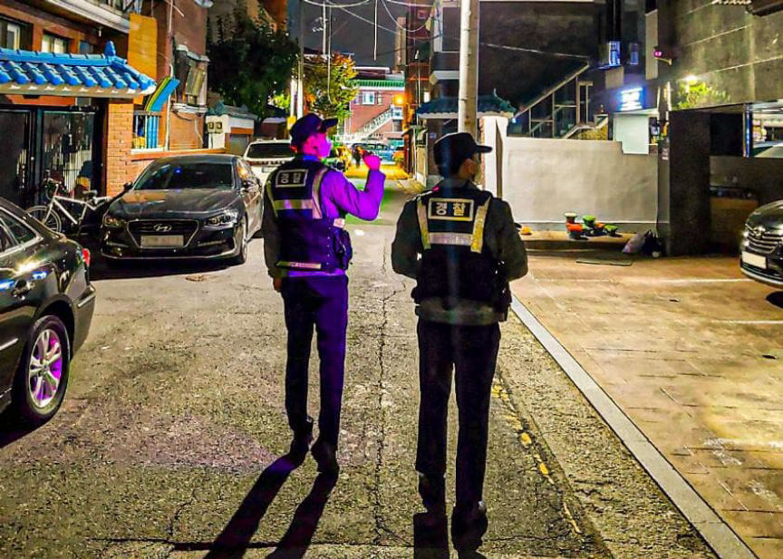
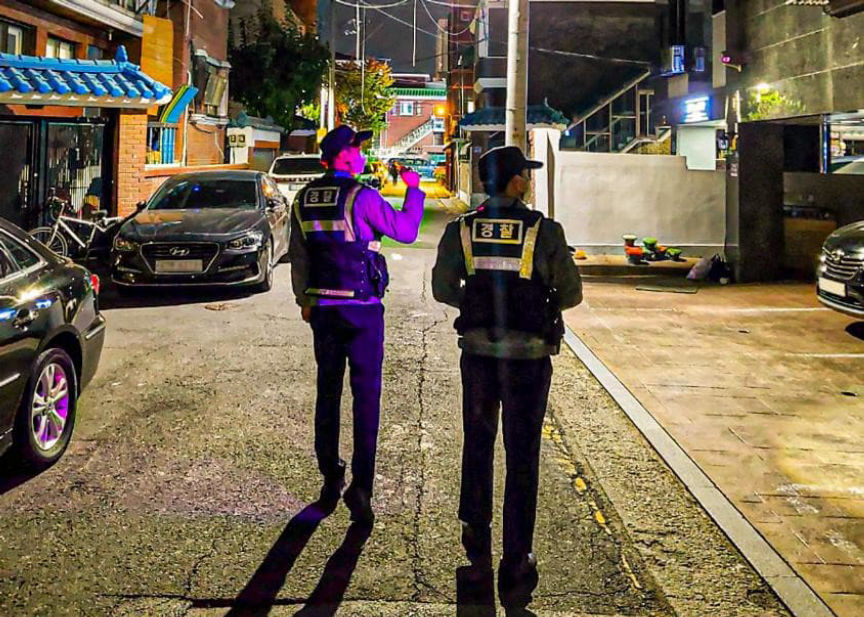

Australian Trio Arrested for Selling Drugs on the Darkweb
~2 min read | Published on 2022-04-13, tagged Arrested, Darkweb-Vendor using 374 words.
Australian Trio Arrested for Selling Drugs on the Dark Web
In New South Wales, Australia, authorities arrested and charged three people suspected of distributing illicit drugs through the darkweb.
According to a press release by the NSW Police, the defendants–two men aged 47 and 30 and a 42-year-old woman–made approximately $1.185 million from the sale of large quantities of drugs, including E-cigarettes containing THC and synthetic cannabinoids on the darkweb.
The State Crime Command’s Cybercrime Squad’s “Strike Force Alaine” started investigating darkweb drug vendors in the Lake Macquarie area in May 2021. During the investigation, law enforcement officers learned that the defendants had cashed out cryptocurrency worth $1.185 million through their bank accounts.

On April 12, 2022, the investigators executed search warrants on two properties allegedly linked to the defendants. The searches resulted in the seizure of more than 100 liters of THC analogs, 15 kilograms of lollipops laced with illegal drugs, and electronic devices. Officers arrested all three defendants after searching their properties.
Cybercrime Squad Commander, Detective Acting Superintendent Gordon Arbinja:
“These arrests should serve as a warning to those using the internet to conceal criminal activity, your anonymity is not guaranteed, and you aren’t outside the reach of law enforcement.”
The 47-year-old man and a 42-year-old woman were charged with three counts of supplying a psychoactive substance for human consumption, eight counts of supplying a prohibited drug, knowingly dealing with the proceeds of crime, knowingly directing a criminal group to assist crime, and participating in a criminal group contributing to criminal activity.
The duo was denied bail and is set to appear before the Belmont Local Court on April 13, 2022.
The 30-year-old man was charged with three counts of knowingly supplying a psychoactive substance for human consumption, eight counts of supplying a prohibited drug, and participating in a criminal group.
He was granted bail and will appear before the Belmont Local Court on April 20, 2022.
archive.org
In New South Wales, Australia, authorities arrested and charged three people suspected of distributing illicit drugs through the darkweb.
According to a press release by the NSW Police, the defendants–two men aged 47 and 30 and a 42-year-old woman–made approximately $1.185 million from the sale of large quantities of drugs, including E-cigarettes containing THC and synthetic cannabinoids on the darkweb.
Are they missing their back plates?
The State Crime Command’s Cybercrime Squad’s “Strike Force Alaine” started investigating darkweb drug vendors in the Lake Macquarie area in May 2021. During the investigation, law enforcement officers learned that the defendants had cashed out cryptocurrency worth $1.185 million through their bank accounts.

The 47-year-old man and 42-year-old woman were arrested befoe the third suspect.
On April 12, 2022, the investigators executed search warrants on two properties allegedly linked to the defendants. The searches resulted in the seizure of more than 100 liters of THC analogs, 15 kilograms of lollipops laced with illegal drugs, and electronic devices. Officers arrested all three defendants after searching their properties.
The 47-year-old man and 42-year-old woman were arrested befoe the third suspect.
Cybercrime Squad Commander, Detective Acting Superintendent Gordon Arbinja:
“These arrests should serve as a warning to those using the internet to conceal criminal activity, your anonymity is not guaranteed, and you aren’t outside the reach of law enforcement.”
The 47-year-old man and a 42-year-old woman were charged with three counts of supplying a psychoactive substance for human consumption, eight counts of supplying a prohibited drug, knowingly dealing with the proceeds of crime, knowingly directing a criminal group to assist crime, and participating in a criminal group contributing to criminal activity.
Police seized “seized more than 100 litres of THC-based chemicals and 15kg of lollipops ... laced with a prohibited drug.”
The duo was denied bail and is set to appear before the Belmont Local Court on April 13, 2022.
The 30-year-old man was charged with three counts of knowingly supplying a psychoactive substance for human consumption, eight counts of supplying a prohibited drug, and participating in a criminal group.
Police seized “seized more than 100 litres of THC-based chemicals and 15kg of lollipops ... laced with a prohibited drug.”
He was granted bail and will appear before the Belmont Local Court on April 20, 2022.
archive.org